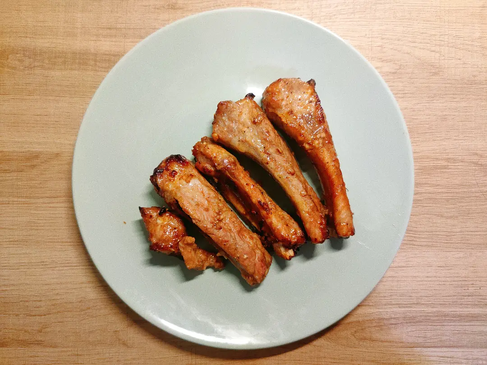

I'm not a professional chef, but absolutely love cooking.
What I love most about cooking is the ability to be creative.
It allows experimentation with different spices, cuisines, and techniques.
It also gives you the opportunity to learn about different cultures and cuisines, which can be fascinating.
I love that cooking give me a chance to be creative and indulge in some ‘play’ time. I adore losing myself in the rituals of chopping, stirring and tasting.